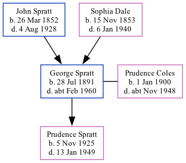

George Dale Spratt 1891 - c1960
[ Home ] | [ Calendar ] | [ Surnames Index ] | [ Family History ]A road sweeper and the son of John Spratt (an agricultural laborer) and Sophia DaleGeorge Spratt, the great-uncle of Nigel Horne, was born in St Nicholas-at-Wade, Kent, England on Jul 28, 18911,2,3,4,5, was baptized there on Aug 23, 1891 and married Prudence Coles (with whom he had 1 child, Prudence M, ) in Thanet, Kent, England around Nov 19247.
George spent all of his life in Kent, England. Throughout his life, he lived at 2 Nash Court Cottage, Nash Road, Margate, Kent on Mar 31, 190110; and at 4 St John's Road, Margate, Kent on Sep 29, 19392, in 19539 and in 19558. He served in the navy from Oct 12, 1908 to Sep 4, 1928.
He died c. Feb 1960 in Thanet3,6.
Parents
- John was born on Mar 26, 1852
- Sophia was born on Nov 15, 1853
Children
- Prudence M was born on Nov 5, 1925
Citations
- 1901 England Census Online publication - Provo, UT, USA: The Generations Network, Inc., 2005.Original data - Census Returns of England and Wales, 1901. Kew, Surrey, England: The National Archives of the UK (TNA): Public Record Office (PRO), 1901. Data imaged from the National
- 1939 Register - Findmypast (was the head of the household)
- England & Wales, Death Index: 1984-2005 Online publication - Provo, UT, USA: The Generations Network, Inc., 2007.Original data - General Register Office. England and Wales Civil Registration Indexes. London, England: General Register Office. © Crown copyright. Published by permission of the Cont
- England & Wales, FreeBMD Birth Index, 1837-1915 Online publication - Provo, UT, USA: The Generations Network, Inc., 2006.Original data - General Register Office. England and Wales Civil Registration Indexes. London, England: General Register Office. © Crown copyright. Published by permission of the Cont
- UK, Royal Navy Registers of Seamen's Services, 1900-1928 Ancestry.com Operations, Inc.
- England & Wales deaths 1837-2007 - Findmypast
- England & Wales, Marriage Index: 1916-2005 Online publication - Provo, UT, USA: The Generations Network, Inc., 2009.Original data - General Register Office. England and Wales Civil Registration Indexes. London, England: General Register Office. © Crown copyright. Published by permission of the Cont
- 1955 Kelly's Thanet Directory
- 1953 Kelly's Thanet Directory
- 1901 England, Wales & Scotland Census - Findmypast (was age 9 and the son of the head of the household)
Media
George Dale Spratt - Naval Record
1955 Kelly's Thanet Directory

England & Wales marriages 1837-2008 - BMD/M/1924/4/AZ/001097/103
England & Wales births 1837-2006 - BMD/B/1891/3/AZ/000535/328
Kent, Canterbury Archdeaconry baptisms 1538-1912 - GBPRS/CANT/B/96802369
1911 England, Wales & Scotland Census Transcription - GBC-1911-RG14-05590-0015-27
British Royal Navy Seamen 1899-1924 Transcription - GBM-ADM188-134971
England & Wales deaths 1837-2007 - BMD/D/1960/1/AZ/001109/086
1939 Register - TNA/R39/1755/1755D/014/25
England, Births & Baptisms 1538-1975 Transcription - R_884660337
England, Births & Baptisms 1538-1975 Transcription - R_884948253
Family Tree
Generated by ged2site. Last updated on Nov 13, 2024